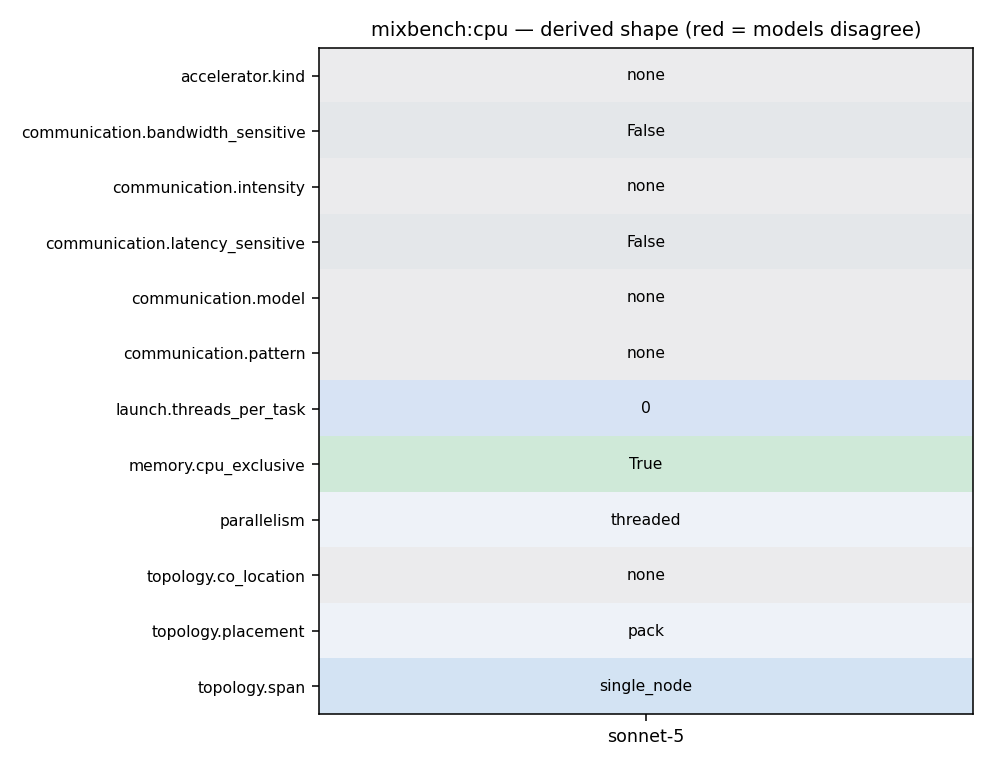

./mixbench-cpu [array_size_in_MiB_units]
46 int main(int argc, char* argv[]) { 47 std::cout << "mixbench-cpu (" << VERSION_INFO << ")" << std::endl; 48 49 const auto hardware_concurrency = omp_get_max_threads(); 50 51 ArgParams args{static_cast<unsigned int>( 52 hardware_concurrency * DEF_VECTOR_SIZE_PER_THREAD / (1024 * 1024))}; 53 54 if (!argument_parsing(argc, argv, &args)) { 55 std::cout << "Usage: mixbench-cpu [options] [array size(1024^2)]" 56 << std::endl 57 << std::endl 58 << "Options:" << std::endl 59 << " -h or --help Show this message" << std::endl; 60 61 exit(1); 62 } 63 64 std::cout << "Use \"-h\" argument to see available options" << std::endl; 65 66 const size_t VEC_WIDTH = 1024 * 1024 * args.vecwidth; 67 68 std::unique_ptr<std::byte[]> c; 69
20 unrolls the vectorized instructions as intended, in order to approach peak performance. 21 `clang` on the other hand, at the time of development, has been observed that it does not 22 properly produce optimum machine instruction sequences. 23 The nature of computations for loop iteration in this benchmark is inherently sequential. 24 So, it is essential that the compiler adequatelly unrolls the loop in the generated code 25 so the CPU does not stall due to dependencies. 26 27 ## Building notes 28
4 * Contact: Elias Konstantinidis <ekondis@gmail.com> 5 **/ 6 7 #include <omp.h> 8 9 #include <chrono> 10 #include <cstddef> 11 #include <cstring> 12 #include <iostream> 13 #include <memory> 14 15 #include "mix_kernels_cpu.h" 16 #include "version_info.h" 17 18 constexpr auto DEF_VECTOR_SIZE_PER_THREAD = 4 * 1024 * 1024; 19 20 using ArgParams = struct { unsigned int vecwidth; }; 21 22 // Argument parsing 23 // returns whether program execution should continue (true) or just print help 24 // output (false) 25 bool argument_parsing(int argc, char* argv[], ArgParams* output) { 26 int arg_count = 0; 27 for (int i = 1; i < argc; i++) {
5 * Contact: Elias Konstantinidis <ekondis@gmail.com> 6 **/ 7 8 #include <omp.h> 9 10 #include <algorithm> 11 #include <chrono> 12 #include <iomanip> 13 #include <iostream> 14 #include <vector> 15 16 const auto base_omp_get_max_threads = omp_get_max_threads(); 17 18 using benchmark_clock = std::chrono::steady_clock; 19 20 #ifdef BASELINE_IMPL 21 22 template <typename Element, size_t compute_iterations, size_t static_chunk_size> 23 Element __attribute__((noinline)) bench_block(Element* data) { 24 Element sum = 0; 25 Element f = data[0]; 26 27 #pragma omp simd aligned(data : 64) reduction(+ : sum) 28 for (size_t i = 0; i < static_chunk_size; i++) {
46 int main(int argc, char* argv[]) { 47 std::cout << "mixbench-cpu (" << VERSION_INFO << ")" << std::endl; 48 49 const auto hardware_concurrency = omp_get_max_threads(); 50 51 ArgParams args{static_cast<unsigned int>( 52 hardware_concurrency * DEF_VECTOR_SIZE_PER_THREAD / (1024 * 1024))}; 53 54 if (!argument_parsing(argc, argv, &args)) { 55 std::cout << "Usage: mixbench-cpu [options] [array size(1024^2)]" 56 << std::endl 57 << std::endl 58 << "Options:" << std::endl 59 << " -h or --help Show this message" << std::endl; 60 61 exit(1); 62 } 63 64 std::cout << "Use \"-h\" argument to see available options" << std::endl; 65 66 const size_t VEC_WIDTH = 1024 * 1024 * args.vecwidth; 67 68 std::unique_ptr<std::byte[]> c; 69
43 return true; 44 } 45 46 int main(int argc, char* argv[]) { 47 std::cout << "mixbench-cpu (" << VERSION_INFO << ")" << std::endl; 48 49 const auto hardware_concurrency = omp_get_max_threads(); 50 51 ArgParams args{static_cast<unsigned int>( 52 hardware_concurrency * DEF_VECTOR_SIZE_PER_THREAD / (1024 * 1024))}; 53 54 if (!argument_parsing(argc, argv, &args)) { 55 std::cout << "Usage: mixbench-cpu [options] [array size(1024^2)]" 56 << std::endl 57 << std::endl 58 << "Options:" << std::endl 59 << " -h or --help Show this message" << std::endl; 60 61 exit(1); 62 } 63 64 std::cout << "Use \"-h\" argument to see available options" << std::endl; 65 66 const size_t VEC_WIDTH = 1024 * 1024 * args.vecwidth;